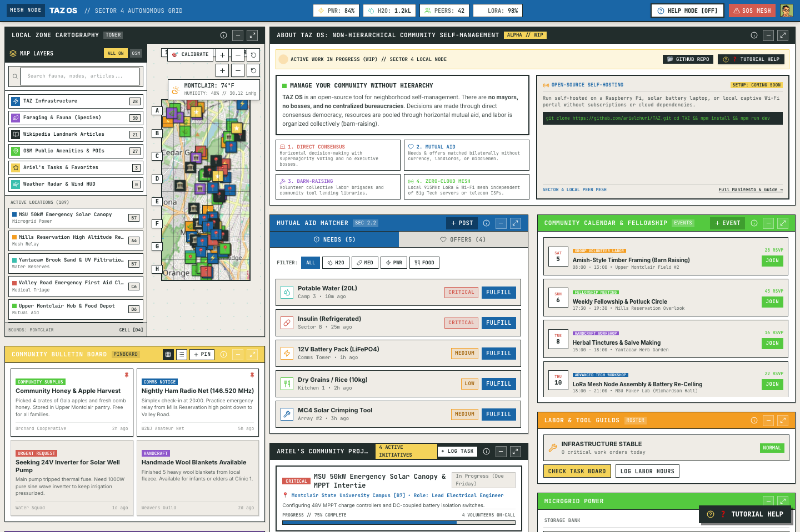
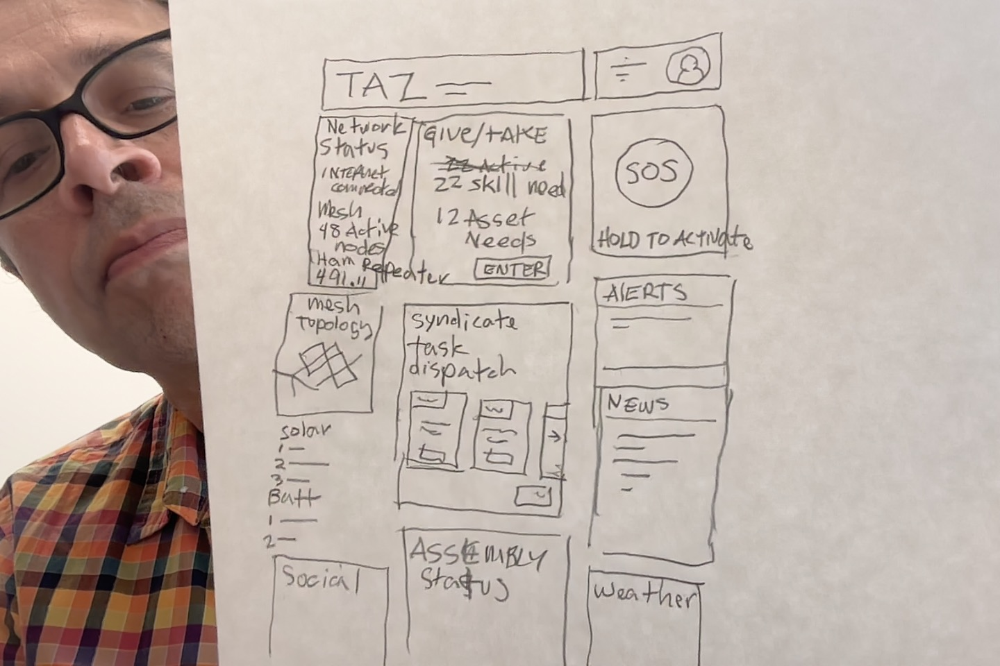
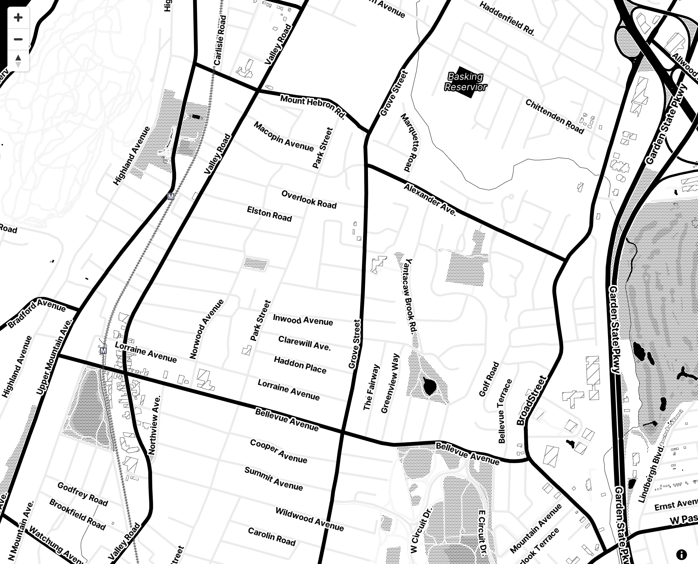

★ Work in Progress
TAZ OS
Temporary Autonomous Zone — Offline Mesh Operating System
TAZ OS is an open-source, non-hierarchical community self-management operating system engineered for local resilience and off-grid coordination.
When municipal infrastructure, cellular grids, or internet connections fail, communities need immediate horizontal coordination tools. TAZ provides a unified interface for peer-to-peer mutual aid matching, microgrid power telemetry, localized cartography, and direct consensus democracy without any internet dependencies.
Key Principles:
- Zero-Cloud Mesh: Runs entirely on local 915MHz LoRa mesh networks and captive Wi-Fi portals on low-power devices like Raspberry Pis.
- Peer-to-Peer Mutual Aid: Direct "Give & Take" surplus matching without currency, middlemen, or corporate algorithms.
- Neo-Brutal UI: High-contrast, tactile, utilitarian design system built for maximum legibility in low-power and high-stress field conditions.
- Direct Democracy: Horizontal assembly voting and consensus charters.
Paper Prototyping
The interface architecture originated with hand-drawn paper wireframes to define information hierarchy and spatial organization before code.
Every quadrant corresponds to an essential survival and social layer: network and telemetry gauges at the top, spatial cartography and resource boards in the primary viewport, and bottom status strips for working groups and labor rosters.
Rapid physical paper prototyping allowed rapid stress-testing of dense layouts to ensure critical actions (such as one-touch mesh SOS broadcasts and urgent insulin/water requests) remained instantly accessible.

Localized Cartography
Spatial awareness is paramount during localized emergencies. TAZ integrates calibrated 8×8 grid cartography (Sector 4 grid) rendering topographic contours, emergency shelters, food distribution depots, and water catchment points.
The map is rendered offline with layered vector geometry, allowing users to cross-reference active LoRa peer positions with natural landmarks and shelter infrastructure.

System Architecture & Modules
Mutual Aid Matcher
A lightweight bilateral matching engine connecting surplus community skills ("Offers") with vital supply requests ("Needs") flagged by urgency.
Microgrid Telemetry
Real-time telemetry monitoring community battery storage banks (LiFePO4), solar MPPT charge controllers, and water catchment gauges.
Mesh Comms & SOS
Encrypted local communication over 915MHz LoRa packets with a dedicated hold-to-activate emergency SOS beacon broadcast.
Collective Labor Roster
Organized volunteer labor brigades (barn-raising) for timber framing, solar canopy assembly, and bio-filter maintenance.
Consensus Governance
Non-hierarchical direct democracy modules supporting assembly proposals, supermajority voting, and neighborhood charters.
Offline Knowledge Base
Self-hosted offline library of medical triage manuals, permaculture guides, RF antenna tuning diagrams, and equipment repair specs.